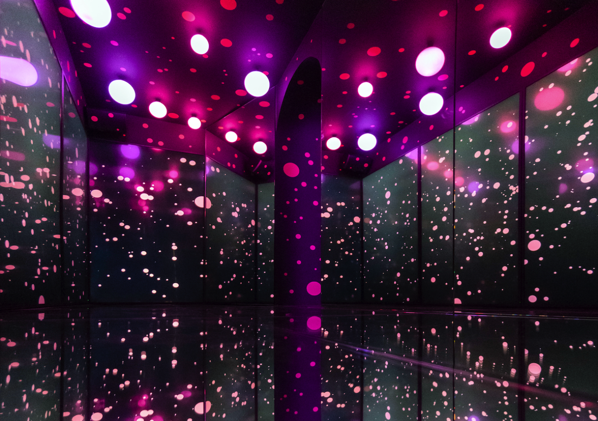

THE KID
The Future Is Old
19 November - 31 July 2021

MOCO Museum heeft de première van de eerste Nederlandse solotentoonstelling van de Internationale hedendaagse kunstenaar THE KID, waarbij hedendaagse kunst haar licht werpt op humanisme in de sociale crisis en het democratisch verval van onze 21e eeuw!
Een tentoonstelling die grenzen zal verleggen, medemenselijkheid wakker zal maken en het Museumplein in Amsterdam op zal schudden. In zijn tentoonstelling van november aanstaande zet MOCO Museum de Internationale hedendaagse kunstenaar THE KID in de schijnwerpers. MOCO en THE KID treden gezamenlijk op als curator van de eerste soloshow in Nederland – The Future is Old.
Lees meerTop 5
Must-See Kunstwerken in het Moco Museum
Moco Museum is een onafhankelijk museum gericht op het aanbieden van een breed scala aan inspirerende moderne en hedendaagse kunst aan het brede publiek. Het is de missie van Moco om te vertegenwoordigen wat er op straat gebeurt en die stem te verdedigen. Een bezoek aan Moco is een onvergetelijke ervaring en een echte eye-opener – In art we trust. Hier zijn onze 5 must-see kunstwerken in het Moco Museum in Amsterdam.
Lees meerBanksy
Laugh Now
Expositie Verlengd

Originele kunstwerken uit prive collecties gemaakt door Banksy
Lees meerMoco Masters
Ontmoet iconen zoals Basquiat, Emin, Haring, Hirst, KAWS, Koons, Kusama, OSGEMEOS, Rothko, Warhol & more
Permanent

De Moco Masters collectie prijst de kunstenaars die opvallen vanwege hun uitzonderlijke bijdrage aan de kunst en cultuur – Jean-Michel Basquiat, Tracey Emin, Keith Haring, Damien Hirst, KAWS, Jeff Koons, Yayoi Kusama, OSGEMEOS, Mark Rothko, Andy Warhol & more.
Lees meerStudio Irma
Reflecting Forward: In Search of Connectivism
Expositie Verlengd

De tentoonstelling Digital Immersive Art van Studio Irma x Moco viert onze connecties. Als we onszelf toestaan te laten leiden door compassie en empathie verbeteren we de wereld. Ontdek de eindeloze kracht van kunst in Reflecting Forward.
Lees meerYayoi Kusama

De werken “Night of Stars” en “Pumpkin” zijn te zien in een geheel getransformeerde ruimte.
Lees meerJR Kamer

Als het om maatschappelijke verandering gaat, is JR er altijd als eerste bij. Deze Franse fotograaf, filmmaker en urban artivist is bekend geworden met zijn maatschappelijke projecten overal ter wereld. JR vraagt zich af: ‘Kan kunst de wereld veranderen?’ Moco denkt van wel.
Lees meerMoco Musem
Virtual Reality Tour
 Lees meer
Lees meer